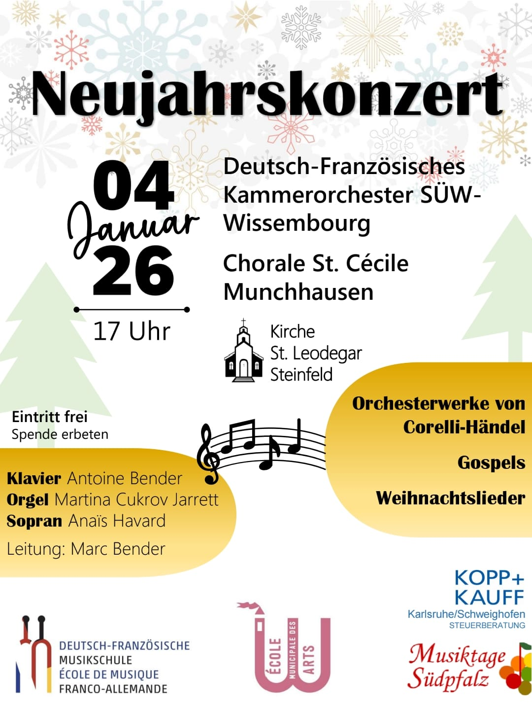
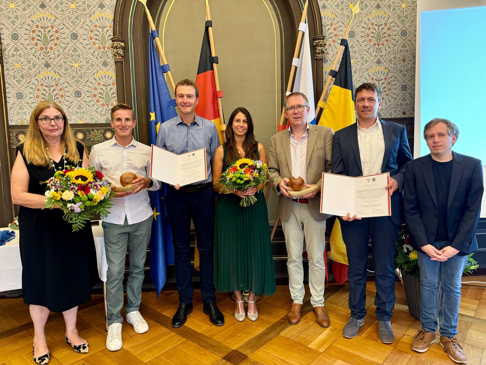

Ein Konzert besuchen
Konzerte in Frankreich und Deutschland während der ganzen Spielzeit — in Kirchen, Sälen und Musikschulen am Oberrhein.
Zu den TerminenMusik ist unsere Leidenschaft
Rund fünfzig Laien- und Berufsmusikerinnen und -musiker aus Frankreich und Deutschland, aller Altersgruppen und Herkunft, vereint unter der Leitung von Marc Bender, um die Kammermusik beiderseits des Rheins lebendig zu halten.

Auf dem Programm
Begleiten Sie das Orchester beim nächsten Konzert. Eintritt frei, Spende erbeten — die Online-Reservierung wird in Kürze freigeschaltet.
Datum und Ort in diesem Entwurf sind noch dem offiziellen Plakat zu entnehmen. In der endgültigen Website wird jedes Konzert als strukturierter Eintrag erfasst (Datum, Uhrzeit, Ort, Programm, Eintritt) und ist dadurch für Google und Kulturkalender auffindbar — mit einem reinen Bild ist das unmöglich.
Das Ensemble
Der Verein OCW wurde 2013 auf Initiative motivierter Schülerinnen und Schüler gegründet, umgeben von leidenschaftlichen Lehrkräften.
In Partnerschaft mit der Musikschule Landau seit 2021 vereint das Ensemble heute rund fünfzig Laien- und Berufsmusikerinnen und -musiker aller Altersgruppen und Herkunft unter der Leitung von Marc Bender.
Konzerte, Tourneen und Partnerschaften mit anderen internationalen Musikschulen: Jedes Projekt bringt eine persönliche, kulturelle und musikalische Bereicherung — und schafft dauerhafte Freundschaften.
En français
La musique, un langage universel, au-delà des frontières ! L'association OCW a été fondée en 2013 à l'initiative d'élèves motivés.

Auszeichnung
Der Preis des Weimarer Dreiecks 2024 wurde dem Projekt Youth Europe Music vom Verein Weimarer Dreieck verliehen — in Anwesenheit des Oberbürgermeisters der Stadt und von Ministerpräsident Bodo Ramelow. Eine Anerkennung für das europäische Engagement des Orchesters.
Mitmachen
Konzerte in Frankreich und Deutschland während der ganzen Spielzeit — in Kirchen, Sälen und Musikschulen am Oberrhein.
Zu den Terminen
Sie spielen ein Streich- oder Blasinstrument, als Laie oder Profi? Das Orchester nimmt in jeder Spielzeit neue Mitglieder auf.
Schreiben Sie uns
Privatpersonen und Unternehmen: Ihre Spende finanziert Noten, Transporte und Saalmieten — und ist in Frankreich zu 60 bis 66 % steuerlich absetzbar.
UnterstützenSie unterstützen uns
Wir danken unseren Sponsoren herzlich — ihre Unterstützung macht jede Konzertspielzeit möglich.


Newsletter
Erhalten Sie zwei- bis viermal jährlich das Spielzeitprogramm und Erinnerungen an bevorstehende Konzerte. Abmeldung mit einem Klick, keine Weitergabe von Daten an Dritte.